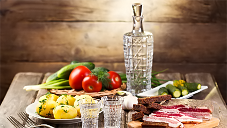

Водка является специфическим русским алкогольным напитком.
В других странах мира также изготовляют местные разновидности водок, но они носят разные названия.
У каждого народа есть свои традиции в создании и употреблении крепких напитков. У каждого народа - свой рецепт. Буквально из любого растения пытался получить пытливый человеческий ум водочку.
Вот некоторые из них - название, из чего сделано, где делают:
Абсент - полынная. Франция, а также Чехия, Испания (Xantia).
Анизетта - анисовая. Испания.
Арак - анисовая. Ирак, Ливан.
Арака - из фиников. Турция.
Аррак - в основе рис, пальмовый сок, ядра ареки (орех), тростниковая меласса. Юго-Восточная Азия, Малайзия, Таиланд.
Арька - из кумыса. Калмыкия, Бурятия.
Бамбузе - бамбуковая. Индонезия.
Барац-Палинка - абрикосовая. Венгрия, Хорватия.
Буряковка - из сахарной свеклы. Украина.
Вильямина - грушевая водка. Швейцария.
Виски - ячменная водка. Англия, Ирландия.
Виски бурбон - в основе кукурузное зерно с добавкой пшеницы. США.
Граппа - виноградная. Италия.
Джин - настоянная на можжевеловых шишечках водка. Англия, Ирландия.
Дынная - водка из дынь. Кабардино-Балкария.
Женевер - можжевеловая водка. Голландия, Франция.
Зивания - виноградная водка. Кипр.
Кальвадос - яблочная водка. Испания, Франция.
Каннабис - конопляная водка. Чехия.
Кашаса - водка из сахарного тростника. Бразилия.
Кизлярка - из смеси фруктов (яблоки, груши, сливы, абрикосы). Юг России.
Киршвассер - вишневая водка. Германия.
Коньяк - из вина. Франция.
Кумышка - молочная. Удмуртия, Мари Эл, Башкирия.
Маотай - рисовая водка. Китай.
Мастика - анисовая. Болгария.
Пастис - анисовая. Франция.
Пейсаховка - изюмная водка. Израиль, Украина (Одесса).
Пульке - из кактусов. Мексика.
Раки - анисовая. Турция.
Ракия - виноградная. Болгария.
Ром - из сахарного тростника. Куба, страны Карибского бассейна.
Саке - рисовая водка. Япония.
Самбука - анисовая. Италия.
Сливовица - сливовая. Венгрия, Словакия, Румыния, Югославия.
Текила - из сердцевины голубой агавы, многолетнего травянистого растения из семейства лилейных (многие по ошибке считают, что агава это кактус). Мексика.
Тутовка - из ягод шелковицы. Азербайджан, Армения.
Узо - анисовая. Греция.
Фрамбуаз - малиновая. Франция.
Ханшина - пшенная водка. Китай.
Цинар - артишововая. Италия.
Чача - виноградная водка. Грузия.
Шнапс - картофельная водка. Германия.
Яржебяк - рябиновая. Польша.
В Росии, в основном, делали водку хлебную. Но были широко известны также и другие виды - анисовая, хинная и прочие.